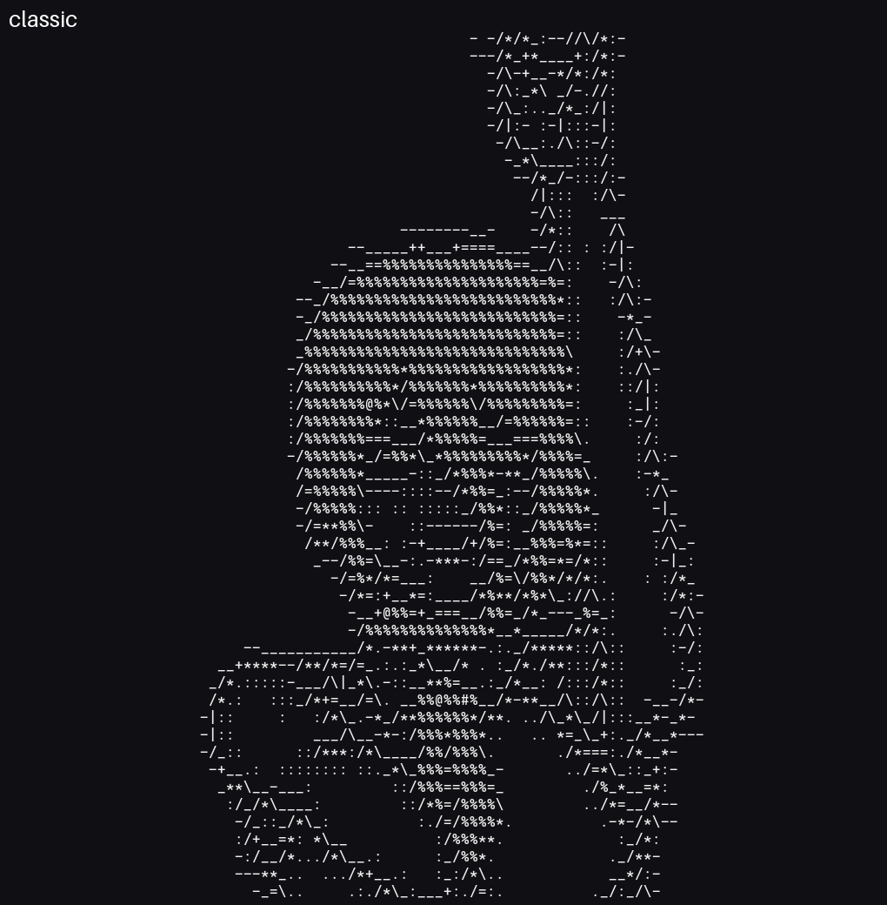
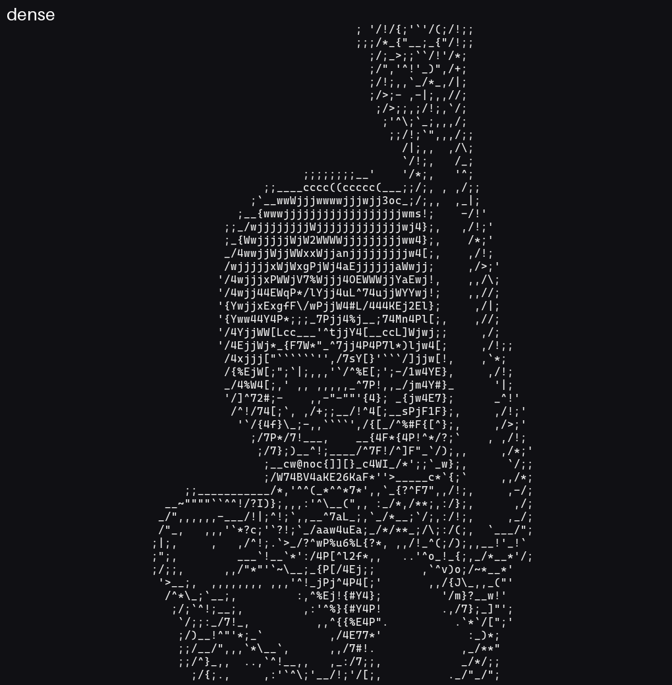
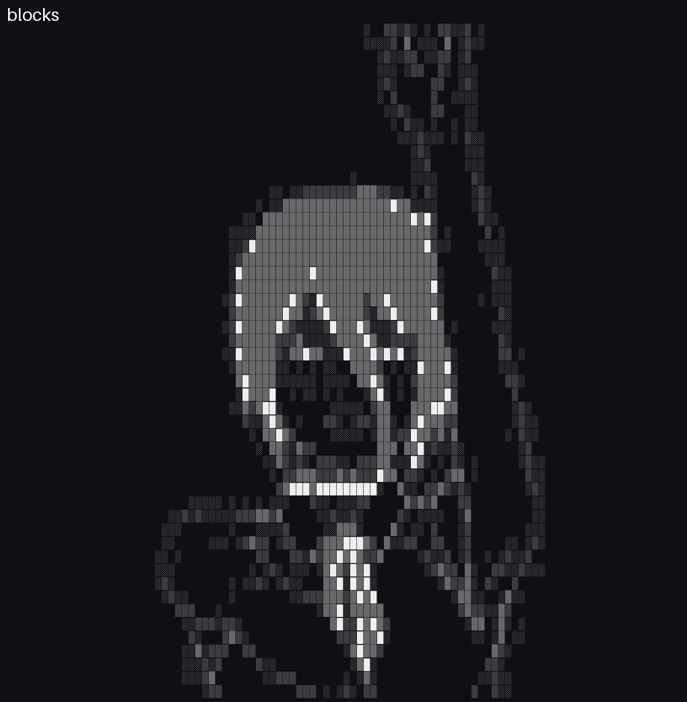

Video in
your terminal.
PlayBash turns local clips into ASCII art on Linux. Choose a rendering mode, add color, or make a video your Fastfetch logo.
Install PlayBash PlayBash demo
Rendering modes
Three ways to draw the same frame.

classicCompact ASCII palette
densePrintable ASCII palette
blocksShaded block charactersdense has the widest palette. Counts exclude spaces and come from the renderer’s character sets.
View symbol counts as a table
| Mode | Symbols excluding spaces |
|---|---|
| Dense | 94 |
| Hex | 16 |
| Classic | 13 |
| Blocks | 4 |
| Matrix | 4 |
| Binary | 2 |
Install and play
Linux, Bash, Git, and Python 3.10+ with pip and venv.
Install
git clone https://github.com/thmanmr976-dot/PlayBash.git
cd PlayBash
bash install.sh
export PATH="$HOME/.local/bin:$PATH"
playbash versionOpen a clip
Replace /path/to/video.mp4 with a local file.
playbash add "/path/to/video.mp4"
playbash list
playbash run 1 --mode densePress q to stop. Enable video colors with playbash config --color.
Animate the Fastfetch logo
Requires Fastfetch, FFmpeg and ffprobe.
playbash fastfetch 1 --adjustUse the arrows and +/− to frame the clip. Press Enter to save it as your default logo.